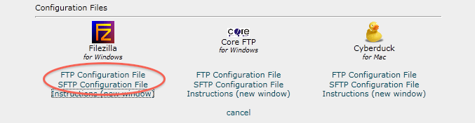
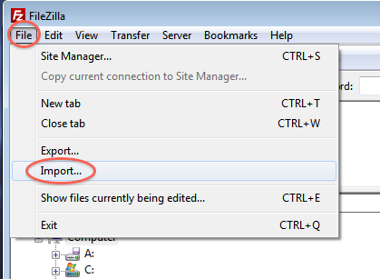

<cpanel setvar="dprefix=../../">
<cpanel Branding="include(stdheader.html)">

<style type="text/css">
    .step_number {
        width: 40px;
        vertical-align: middle;
        text-align: center;
        font-size: 13pt;
        background-color: #DDDDDD;
        border-radius: 10px;
    }
    .step {
        min-height: 100px;
        color: #666666; 
        font-family: helvetica, arial;
        font-size: 11pt;
        padding-top: 10px;
        padding-bottom: 10px;
        padding-left: 20px;
    }
    .step h2 {
        font-weight: bold;
        font-family: helvetica, arial;
        font-size: 13pt;
        margin-left: 0px;
        display: inline;
    }
    .round {
        margin-left: auto;
        margin-right: auto;
        border-radius: 90px;
        width: 26px;
        background-color: #04586c;
        color: white;
        font-family: helvetica, arial;
        border: 2px solid #aaaaaa;
        font-weight: bold;
        font-size: 15pt;
    }
    .heading {
        font-family: helvetica, arial;
        font-size: 16pt;
        color: #04586c;
    }
    td {
        border-bottom: 1px solid #dddddd;
    }
    .hidden_screen {
        display: none;
        max-width: 99%;
        padding-top: 10px;
    }
    .toggle_link {
        text-decoration: underline;
        font-size: 9pt;
        font-family: helvetica, arial;
        cursor: pointer;
         
    }
</style>

<script type="text/javascript">
    YAHOO.util.Event.onDOMReady( function () {
        elements = YAHOO.util.Dom.getElementsByClassName('toggle_link');
        for (var i=0; i<elements.length; i++) {
            YAHOO.util.Event.on(elements[i],'click', function () {
                if (document.getElementById(this.id+'_img').style.display==='block') {
                    CPANEL.animate.slide_up(this.id+'_img');
                } else {
                    CPANEL.animate.slide_down(this.id+'_img');
                }
            });
        }
    });
</script>


<div class="body-content">
<div class="heading"><cptext "FileZilla Instructions"></div>
<hr color="#04586c"/>
<p><cptext "When configuring FileZilla, you will download an XML file and import it to your FileZilla client.">
<cptext "To configure the FileZilla FTP client:"></p>
<p>

<table width='100%'>
    <tr>
        <td class="step_number"><div class="round">1</div></td>
        <td class="step"><h2>Step One</h2><br/>
            <cptext "Click the [output,em,Configure FTP Client] link that corresponds to the FTP account you wish to use to connect to your FTP server.">
        </td>
    </tr>
    <tr>
        <td class="step_number"><div class="round">2</div></td>
        <td class="step"><h2>Step Two</h2>&nbsp;&nbsp;<span id='ss1' class='toggle_link'>"></span><br/>
            <cptext "Click the FTP or SFTP link to download the XML file. We recommend that you use SFTP whenever possible, as it is generally more secure than FTP.">
            <font color="#C45145"><cptext "Note: This step will over-write any previous XML configuration file without warning."></font>
            
        </td>
    </tr>
    <tr>
        <td class="step_number"><div class="round">3</div></td>
        <td class="step"><h2>Step Three</h2><br/>
            <cptext "Open your FileZilla FTP client.">
        </td>
    </tr>
    <tr>
        <td class="step_number"><div class="round">4</div></td>
        <td class="step"><h2>Step Four</h2>&nbsp;&nbsp;<span id='ss2' class='toggle_link'>"></span><br/>
            <cptext "Select the [output,em,Import] option from the [output,em,File] menu (File ⇀ Import).">
            
        </td>
    </tr>
    <tr>
        <td class="step_number"><div class="round">5</div></td>
        <td class="step"><h2>Step Five</h2><br/>
            <cptext "Select the XML file you have just downloaded and click [output,em,OK].">
        </td>
    </tr>
    <tr>
        <td class="step_number"><div class="round">6</div></td>
        <td class="step"><h2>Step Six</h2><br/>
            <cptext "Click the [output,em,OK] button on the resulting [output,em,Import Settings] window.">
        </td>
    </tr>
    <tr>
        <td class="step_number"><div class="round">7</div></td>
        <td class="step"><h2>Step Seven</h2><br/>
            <cptext "Click [output,em,OK] on the resulting [output,em,Import Successful] window.">
        </td>
    </tr>
    <tr>
        <td class="step_number"><div class="round">8</div></td>
        <td class="step"><h2>Step Eight</h2><br/>
            <cptext "To open a connection to your FTP server, select the [output,em,Site Manager] feature from the [output,em,File] menu (File ⇀ Site Manager).">
        </td>
    </tr>
    <tr>
        <td class="step_number"><div class="round">9</div></td>
        <td class="step"><h2>Step Nine</h2><br/>
            <cptext "Select your domain from the [output,em,Select Entry] menu.">
        </td>
    </tr>
    <tr>
        <td class="step_number"><div class="round">10</div></td>
        <td class="step"><h2>Step Ten</h2><br/>
            <cptext "Click the [output,em,Connect] button to connect to your FTP server.">
        </td>
    </tr>
</table>
<br/><br/>
<p><cptext "Note: Third party products are subject to change due to circumstances beyond cPanel's control, potentially rendering these instructions invalid. If this occurs, you can always consult the product manual for the correct procedure."></p>
<br/><br/><br/>
<div class="return-link"><a href="javascript:window.close();"><cpanel langprint="ftp_close"></a></div>
<br/><br/><br/>
</div>
<cpanel Branding="include(stdfooter.html)">
